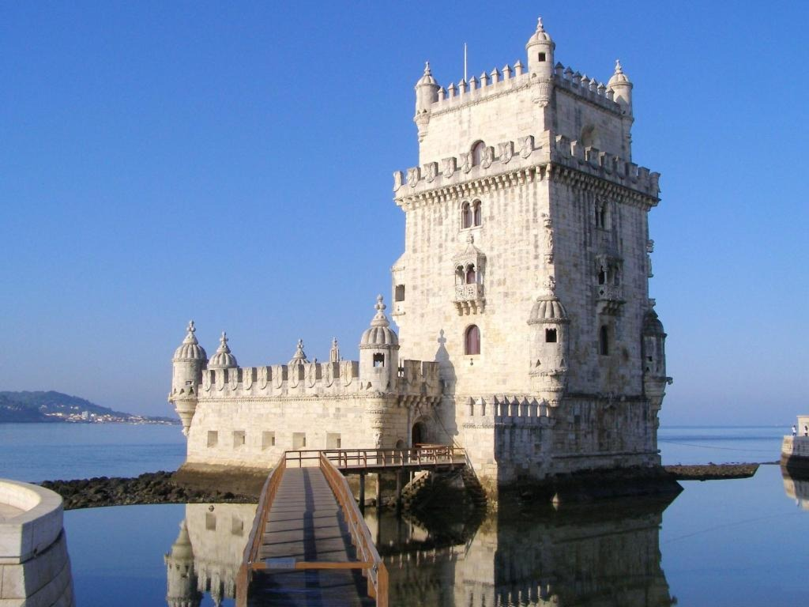
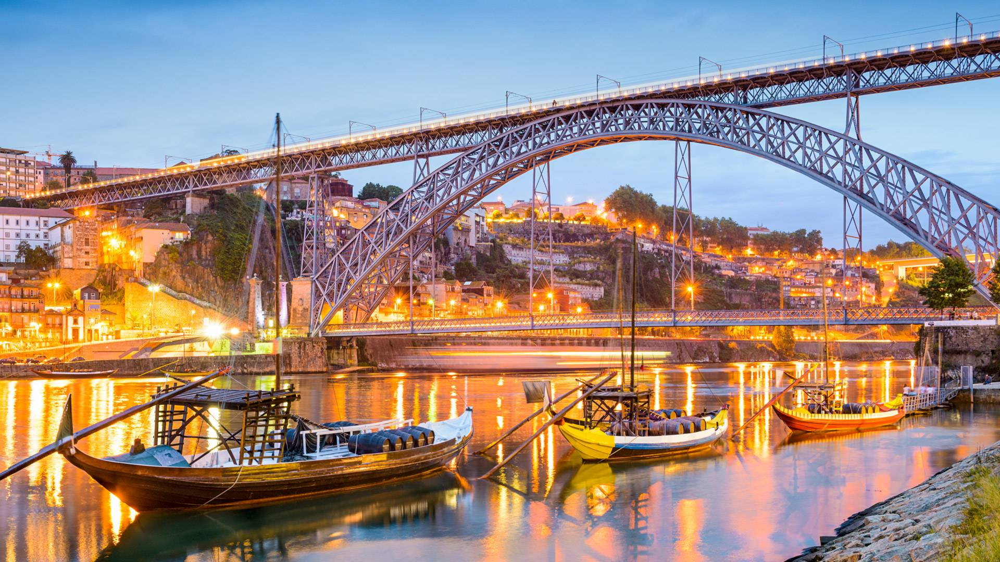
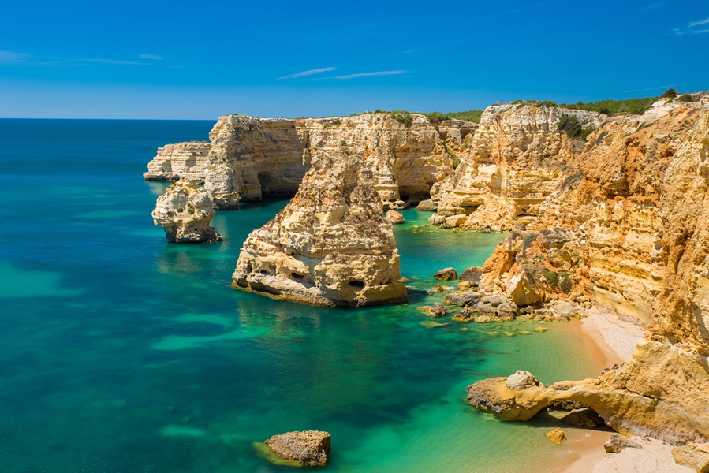
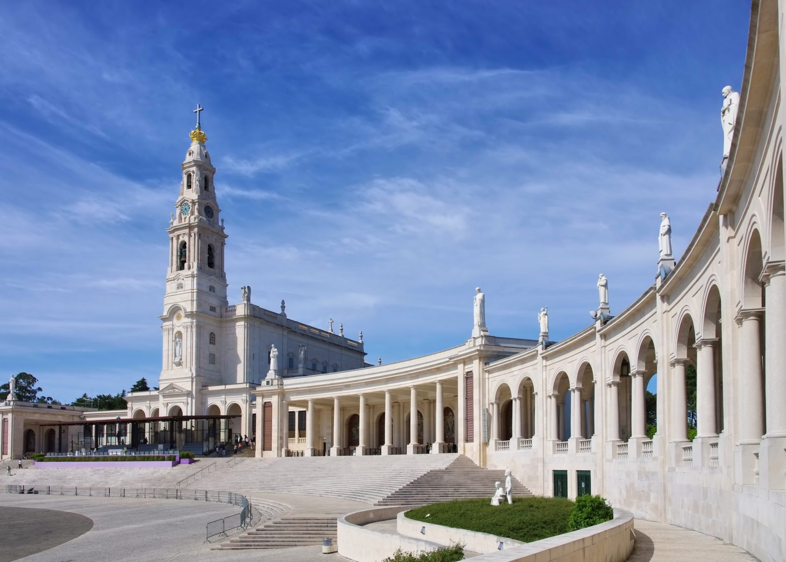

Tradições e costumes

Torre de Belém, Lisboa
Construída no século XVI, às margens do mundialmente conhecido Rio Tejo, a Torre de Belém, um dos mais bonitos lugares em Portugal e um dos mais famosos pontos turísticos em Lisboa - Portugal, funcionava como uma fortaleza e, por lá, diversos tipos de artilharias medievais se encontravam, bem como soldados para a defesa das terras lusitanas. Com o decorrer do tempo, sua funcionalidade foi se moldando. De fortaleza, passou a ser posto aduaneiro, farol e, também, uma masmorra para presos políticos. Outra curiosidade deste primeiro ponto turístico de Portugal é que inicialmente ela estava localizada em uma base de pedras ao meio do rio, posteriormente, passou a fazer parte da praia homônima. A Torre de Belém é, sem dúvidas, um dos melhores lugares para ir em Portugal. Atualmente, é possível visitá-la e conhecer seu interior, que conta com diversos artefatos históricos e conta um pouco sobre o passado do país.

Ponte Dom Luís I, Porto
Finalizada em 1886 por Gustave Eiffel – o mesmo que criou a Torre Eiffel – a Ponte Dom Luís I é outro ponto turístico de Portugal a ser visitado. Localizada na cidade do Porto, a sua estrutura de ferro é belíssima. Além disso, ela liga a cidade com a Vila Nova de Gaia, um município localizado logo ao lado. A parte de cima da ponte é reservada para o metrô, e também para os turistas, pois têm uma bela vista do Rio Douro. Se a cidade do Porto estiver em um roteiro, visitar a Ponte Dom Luís I é uma ótima escolha.

Praias do Algarve
Caso a opção seja conhecer os pontos turísticos de Portugal no verão, as praias do Algarve são boas escolhas para aproveitar a estação mais quente do ano. Com temperaturas elevadíssimas, o colorido dos guarda-sóis são apenas um dos detalhes imponentes do local. Localizada no litoral sul do país, são inúmeras as possibilidades de visita para aproveitar o forte calor e o Oceano Atlântico. Dentre as principais praias, podemos destacar a do Camilo e Dona Ana, ambas na região de Lagos. Além, claro, da Praia João Arens, em Portimão e, também, a Praia do Carvoeiro.

Santuário de Fátima, Fátima
Localizada a cerca de 1 hora e meia de Lisboa, a pequena cidade de Fátima é a cidade de um dos mais belos pontos turísticos de Portugal, o Santuário de Fátima. Na história local, é contato que três pastores viram por diversas vezes a imagem de Nossa Senhora, isso por volta do ano de 1917. Dois anos depois, o local começou a receber peregrinos em busca de experiências religiosas. Foi também no ano de 1919 que a primeira capela, chamada de Capelinha das Aparições ganhou corpo. Atualmente, para o turismo religioso, Fátima é uma das capitais mundiais e, se sua ideia é também praticar a fé em um momento de lazer em Portugal, esse local não pode ficar de fora de sua lista.